Подберите
пропущенное слово. На рисунке изображен главный (1) Олимпийского движения.
пропущенное слово. На рисунке изображен главный (1) Олимпийского движения.
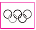 |
Выберите правильный ответ:
(1)
Пройти тест · все вопросы на одной странице
 |
(1)
(1)
(2)
Поперёк борозд стопу ставят на верхний выступ, чтобы не зацепиться. Вдоль борозд ногу ставят в глубину между ними.
(1)
(2)
На камнях шаг короче, опору держат на передней части стопы. В болоте и высокой траве стопу ставят целиком.
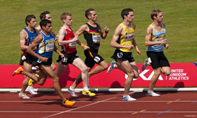 | 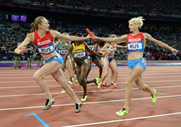 |
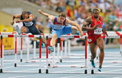 | 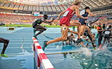 |
Гладкий бег идёт без препятствий, эстафета — с палочкой, барьерный — через барьеры, бег с препятствиями включает яму с водой.
| Римский император Феодосий I запретил проводить Олимпийские игры | |
| Документ с первыми упоминаниями об античных Олимпийских играх | |
| Прошёл I Международный олимпийский конгресс, на котором был создан Международный олимпийский комитет | |
| Состоялись игры I Олимпиады |
Первые упоминания античных Игр относят к 776 году до нашей эры, запрет Феодосия — к 394 году. МОК создан в 1894 году, Игры I Олимпиады прошли в 1896 году.
| 9 место в конном спорте на Играх V Олимпиады | |
| 2 место в стрельбе из пистолета на Играх IV Олимпиады | |
| 2 место в борьбе на Играх IV Олимпиады |
Конный результат Игр V связан с Дмитрием Павловичем Романовым. На Играх IV второе место в стрельбе из пистолета у Панина-Коломенкина, в борьбе — у Николая Орлова.
| Москва | |
| Афины | |
| Сочи | |
| Париж | |
| Лондон | |
| Сент-Луис | |
| Стокгольм |
Афины 1896, Париж 1900, Сент-Луис 1904, Лондон 1908, Стокгольм 1912. Москва принимала летние Игры 1980 года, Сочи — зимние 2014 года.
Олимпийские игры возникли в Олимпии, в Древней Греции.
I Международный олимпийский конгресс прошёл в Париже.
Международный олимпийский комитет учреждён 23 июня 1894 года.
Российскую команду на Играх V Олимпиады возглавлял князь Дмитрий Павлович Романов.
Российский олимпийский комитет создан в 1911 году.
Комплексы зарядки и физкультминуток в дневнике обновляют раз в две-три недели.
Копьё, диск, молот, ядро, теннисный мяч и граната метают, это снаряды для метания.
Занятие начинают с разминки: она готовит мышцы и суставы к нагрузке.
(1)
(2)
(3)
В учебном комплексе ГТО 11 ступеней для возрастов от 6 до 70 лет и старше и три уровня трудности.
(1)
(2)
На спуске корпус отклоняют назад и удлиняют шаг. В гору наклоняются вперёд, шаг делают короче и чаще.
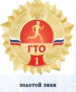 | 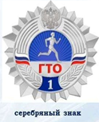 | 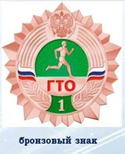 |
Для знака ГТО сдают 4 обязательных теста. По выбору для золота нужно 4, для серебра 2, для бронзы 1.
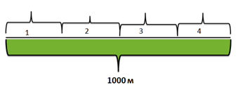 |
| 1 | |
| 4 | |
| 3 | |
| 2 |
На 1000 м первый, третий и четвёртый отрезки по 250 м бегут на 40 процентов максимальной скорости, второй — на 30.
Возраст 12–13 лет в этом курсе сдаёт нормативы IV ступени ГТО.
Бег отличает фаза полёта: есть момент, когда обе ноги не касаются опоры.
Короткую дистанцию бегут только по своей дорожке.
После длинной дистанции ходят, пока не восстановится дыхание.
В 6 классе равномерный бег начинают осваивать на дистанции 800 м.
Спринтом считают дистанции до 400 метров включительно.
Средние дистанции начинают с высокого старта. Низкий старт применяют в спринте.
Сдачу нормативов ГТО подтверждают удостоверением и нагрудным знаком.
Прыжок в длину и тройной прыжок измеряют по горизонтали. Прыжки в высоту и с шестом — вертикальные.
Равномерный бег делят на старт, стартовый разбег, бег по дистанции и финиширование.
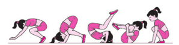 | 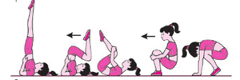 | 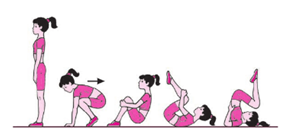 |
Связку узнают по начальной позе и направлению движения: перекат, кувырок или выход в стойку на лопатках.
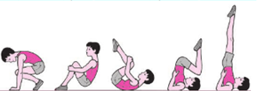 | 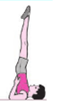 | 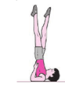 | 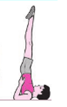 |
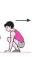 | 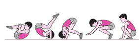 | 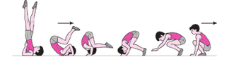 | 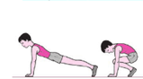 |
Номер связки ставят по рисунку: смотрят, из какого положения начинается движение и чем оно заканчивается.
Раздел физической подготовленности заполняют каждую четверть или триместр, когда снимают контрольные результаты.
В стойке на голове с опорой на руки на коврик ставят лобную часть, вместе с кистями она образует треугольник.
Указ о возвращении комплекса ГТО подписал Владимир Путин.
Гимнастика включает сложные упражнения, в том числе на перекладине, брусьях, кольцах, бревне и коне.
Сложные упражнения на снарядах выполняют со страховкой учителя или партнёра.
Акробатические упражнения, выполненные подряд и связанные между собой, составляют комбинацию.
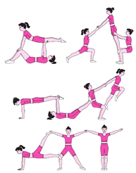 |
Кувырок — вращение тела через голову с последовательной опорой.
В висе плечи находятся ниже перекладины, тело удерживается хватом.
На уроках у девочек из гимнастических снарядов используют бревно.
На уроках у мальчиков из гимнастических снарядов используют перекладину.
(1)
Координация позволяет выполнять сложное движение точно и без лишнего напряжения мышц.
(1)
(2)
(3)
(4)
Нагрузку дозируют по пределу: выше предела упражнение не выполнить, ниже предела она слишком слабая.
(1)
(2)
(3)
Величина нагрузки зависит от физической подготовленности, поэтому у каждого человека она своя.
| Сила | |
| Скоростно-силовые возможности | |
| Координационные возможности | |
| Прикладные навыки | |
| Выносливость | |
| Гибкость | |
| Скоростные возможности |
Силу проверяют отжиманиями, скорость бегом на 60 м, прыжок с места — скоростно-силовые качества, челнок — координацию, наклон — гибкость, лыжи — выносливость, плавание — прикладной навык.
Испытания ГТО делятся на обязательные и выполняемые по выбору.
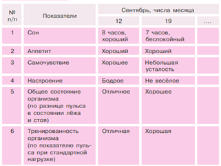 |
Такой образец относится к наблюдению за физическим развитием: туда вносят показатели тела.
Лазанье по канату начинают после освоенного захвата каната руками.
Из виса подтягивают колени и захватывают канат ногами, выпрямлением ног поднимают тело, затем по очереди перехватывают канат руками выше.
Перед сложным гимнастическим упражнением делают разминку.
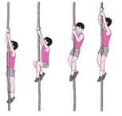 |
Стойка на лопатках: тело опирается на лопатки и затылок, ноги направлены вверх.
Главный знак Олимпийского движения — его символ, пять колец. Эмблема и талисман принадлежат отдельным Играм.